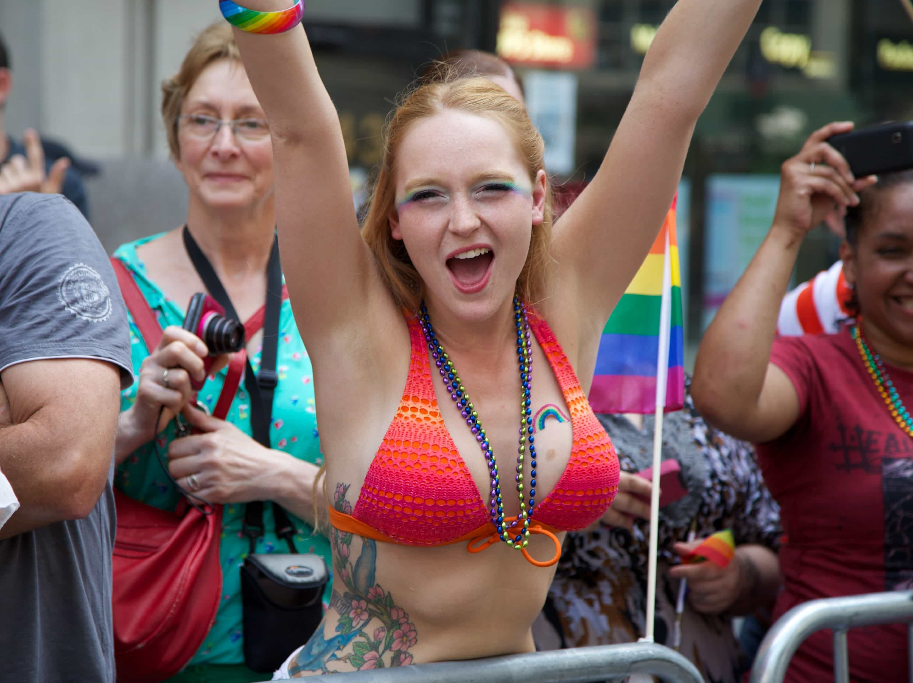
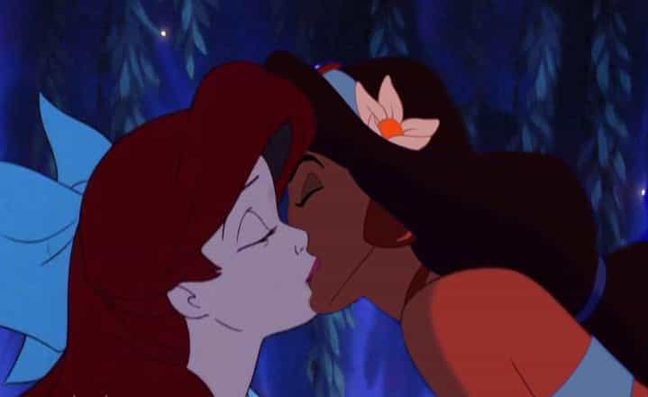

Eric is a self-employed artist who writes about modern culture. You can follow him on twitter.


I can hear you already. “How can you write this?! Lesbians don’t want to have sex with men!”
Before you nay-say, let me preface this article with one thing: I’ve done this. I’ve had sex with a full-on gold-star lesbian, and made out with several more. It’s not difficult. In fact, most of lesbians have had sex with men.
“But why would you want to have sex with a lesbian?”
Well, person with low-testosterone, lesbians combine the fantasy of hot girl-on-girl action, with a woman who is untouched by other men. Someone who is deeply sexual, experienced, and a “virgin” at the same time. You’ll be boldly going where no man has gone before.
To seduce a lesbian, you need to have basic game down. If you can’t pull a straight woman, you’re not going to be able to pull a lesbian.
Here’s how to fulfill your sapphic fantasies:
It’s no secret that many lesbians aren’t lesbians because they like women, but because they hate men. Avoid women who use words like “queer” or “cisgendered”, and blame patriarchy for the evils of the world. You want a girl who befriends men, but happens to be sexually attracted to women.
Look for someone you’d describe as a “cool girl.” A good test is to comment on another girl you find attractive in front of her. If she berates you for “objectifying” women, abort. If she replies, “yeah, that girl does have a nice ass,” then you’ve got a winner.
You may find younger lesbians are simply experimenting with their sexual identity, and actually bisexual. Bisexual women are fun, but for the purposes of this article, I’m assuming you’re seducing a full-on lesbian.

Keep in mind, you may take a quality hit when seducing lesbians. Most non-butch lesbians are cute, but don’t look like the girls in lesbian porn. If you want a girl who looks like a male fantasy, pick a girl who wants to be a male fantasy. Seducing a lesbian is a different challenge.
While it’s not uncommon to have sex with a straight girl thirty minutes into a coffee date, it’s unlikely you’ll be able to pull a lesbian for a same night lay from a cold approach (though not impossible).
It may seem counter-intuitive to suggest becoming “friends first,” but keep in mind you’re friending a girl who’s cool to hang out with, supports you fucking other girls, and might even make a good wingman. Lesbians think like straight men, and friendship between lesbian women and straight men is so common it actually has a name – lesbros.
Attractive lesbians are used to being hit on by straight men. The more attractive she is, the more she’s been hit on. Guys will try to tell these women they just haven’t found the right man yet, or that all she needs is some good “deep dicking.”
This isn’t bad because she’s a lesbian – it’s bad because it’s bad game. These men are qualifying themselves, because they take her sexual orientation as a personal rejection, and respond by trying to prove that they’re “man enough” for her, revealing their own insecurity.
Take her sexual orientation as a disqualifier, rather than rejection. Playfully tease her about it. Tell her all the reasons you could never be together, because of your standards, not hers. Behave the way a hot girl would around a guy she’s “just friends with” — let her know you enjoy hanging out with her, but when it comes to dating you’re way out of her league.
A great way to disqualify her is to talk about your other sexual experiences. Let her know you’re used to pulling hotter, more feminine straight girls. Bring one around her or show her pictures. She’ll likely start talking about her own sexual experiences, as way to qualify herself to you. Soon, talking about sex and turning each other on with stories will become a regular part of your relationship. Speaking of sex…
Just because you’re friends doesn’t mean you stop having a dick. You can still flirt, as long as you’re playful and continue to disqualify yourself. For example, I’ll say things like, “try not to fall in love with me. I know it can be confusing sometimes, because I’m very pretty like a woman, but I don’t have nearly the cleavage you’re used to.” I grab her hand and put it on my chest. “See? Totally flat.” (Sidenote: this also flips the script and is great good-looking guy game.) You can get away with the most absurd line if you say it with a smirk while having fun and don’t seek a reaction from her.

Steal the frame hot girls have with their beta gay friends. Invite her over to curl up with you. Tell her, “I really like that we can just be affectionate with each other and it doesn’t have to go anywhere.” If you’ve already established you can pull hotter girls, this works as vulnerability and contrast game. She’ll find you sensitive, and trustworthy, and start to develop feelings for you.
Women’s sexuality is incredibly malleable because it’s based in feelings, more than looks. Rather then seducing through raw masculine energy, you’re using positive emotions. If she trusts you, likes you, knows you’re attractive to other women, is comfortable touching you, and talking about sex with you, you’re 90% there.
When straight girls get excited they’ll make out with other women, even if they don’t identify as lesbian or bisexual. Women get turned on by every type of porn, including watching bonobos fucking. When they’re having fun, lesbians will make out with their straight friends, all the damn time.
Don’t believe me? Check out this (ridiculous) documentary about lesbians and their male friends. All of them talk about making out with each other because they’re just friends having fun. When one lesbian says to her male friends, “We’ve never had sex, right?” they look away and struggle to keep a straight face.
Work up to the makout. Dance together, make her laugh, curl up with her, run your hands over each other, playfully wrestle each other – whatever happens, just frame it as friends having fun. It doesn’t mean anything. It doesn’t require her to go in her head, or question her identity. It’s all just happening in the moment. Lesbians are used initiating, so she might even pull you in for the makeout first. It will “just happen,” the same way it does with straight girls.
The best part is she doesn’t have to be attracted to men for this to work. She just has to feel good around you.
Most experienced players know that women don’t want to look like a slut, and will do things alone with you they would never do in public. This is doubly true for lesbians.
Don’t put her in a position where she’ll have others question her sexual identity, or need to deal with beta male orbiters who think her making out with you means they have a chance. Hang out one-on-one, or take her to a venue where she doesn’t know anyone who might judge her.
Workup to sex the same way you worked up to the makeout. She may not have experience with the male body, be intimidated by the penis, or feel like she doesn’t know how to please you. Women don’t realize their inexperience can actually be attractive, or that some men enjoy teaching women how to please them.
Let her know it’s okay if she doesn’t know what she is doing. You two are just exploring. Let her run her hands over your body and see how you react to her touch. It can be a very exciting to see a woman reach for your cock like she has literally never seen one up close before (because she hasn’t), and watch the curiosity and anticipation in her eyes.
If she’s never have been penetrated, just enjoy playing together at first. Make sure she’s turned on by your fingers or mouth, and enjoys exploring your cock before entering her. Treat her like you’d treat a virgin.
Take responsibility for birth control yourself, since most lesbians never have to think about this. Her body knows your sperm might be it’s only shot at getting pregnant, and is liable to flood her with baby-making hormones. Be safe.

After you’ve both shared fun new sexual experiences, she’ll rationalize the whole thing by telling herself that you’re special, and “not like other guys.” Love conquers all. Even lesbianism.